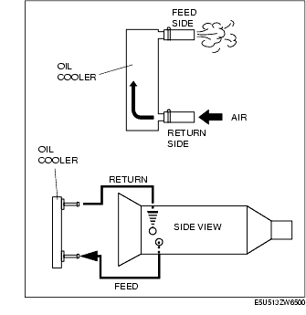
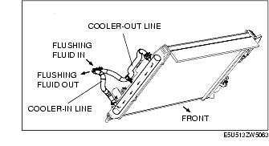

Workshop Manual ➭ TRANSMISSION/TRANSAXLE ➭ AUTOMATIC TRANSMISSION[SJ6A-EL] ➭ OIL COOLER FLUSHING [SJ6A-EL]
OIL COOLER FLUSHING [SJ6A-EL]
id051311710900
{: #wp1059780}
*Note*{: #wp1062719}
• The contaminated cooler line (oil pipes and hoses) and auxiliary cooler must be flushed completely when AT is overhauled or replaced.
- Remove the two oil cooler line hoses and apply air pressure of 196 kPa {2.0 kgf/cm2, 28 psi} from the return hose (pipe) side.{: #wp1059798}

Caution
• Power flushing should be performed very carefully when removing the accumulated debris from the fluid baffle, otherwise the debris cannot be removed or the problem becomes even worse.
*Note*{: #wp1059866}
• Performing back and reverse power flushing two times each does not work because debris or particles flow out from the feed pipe side of AT.
- If there is no air blown out the feed side, flush the oil cooler lines using the power-flushing tool. (See Power Flushing.)
Recommended power-flushing manufacturer
|
Manufacturer {: #wp1059995} |
Part number {: #wp1059997} |
Description {: #wp1059999} |
|---|---|---|
|
Kent Moore {: #wp1059913} |
J35944-AMAZ {: #wp1059915} |
Flushing kit or equivalent {: #wp1059971} |
|
OTC {: #wp1060018} |
60081 {: #wp1060021} |
Portable torque converter, oil cooler cleaner or equivalent {: #wp1060024} |
Power Flushing
Repair procedure
- Before power flushing, inspect the hoses/lines and clamps. Power flushing must begin with back flushing followed by forward flushing to quickly dislodge the restriction. If back flushing is not performed before forward flushing, the restriction could further reduce the ATF flow through the internal mesh type baffle of the cooler and flushing will not be effective or possible.
Inspecting oil lines and clamps
- Be sure to inspect the lines (hoses/pipes) for cuts, crimps (pinched), cracks or any other damage before reusing them.
• If there is any malfunction, replace lines and clamps.
Caution
• Always use new clamps when replacing hoses.
Back flushing
- Following the power flushing equipment manufacturer's instructions, connect equipment so the flushing fluid flows in the opposite direction of normal fluid flow.{: #wp1060192}

- Flush oil cooler/lines until discharge fluid is clean.
Caution
• If the cooler can not be properly flushed using recommended equipment, send the radiator out for sublet cleaning or replace.
Forward flushing
- Connect power flushing equipment so the flushing fluid flows in the direction of normal fluid flow.{: #wp1060261}
- Flush oil cooler/lines until discharged fluid is clean.